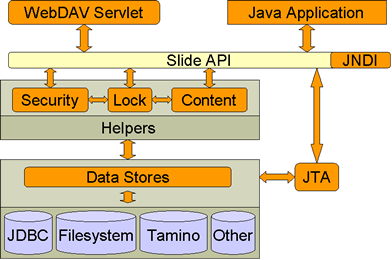
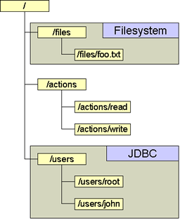
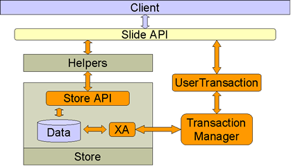

|
||||||||||
| PREV NEXT | FRAMES NO FRAMES | |||||||||
See:
Description
| Packages | |
| org.apache.slide.authenticate | |
| org.apache.slide.common | |
| org.apache.slide.content | Provides classes for accessing and manipulating the content, metadata and revision history of nodes. |
| org.apache.slide.lock | Provides classes to access and manipulate locks. |
| org.apache.slide.macro | Provides high-level object management functions that help deal with complex operations. |
| org.apache.slide.search | |
| org.apache.slide.search.basic | |
| org.apache.slide.search.basic.expression | |
| org.apache.slide.security | Provides classes to access and manipulate permissions. |
| org.apache.slide.store | |
| org.apache.slide.structure | Contains classes for navigating and manipulating the hierarchy of nodes in a namespace. |
| org.apache.slide.transaction | |
| org.apache.slide.util | |
| org.apache.slide.util.conf | |
| org.apache.slide.util.logger | |
Welcome to the documentation of the Jakarta Slide core API.
The Slide architecture is a matrix of modules, ranging from high-level to low-level services, clearly separating functionality around different aspects (content, structure, security, locking and versioning).
Content in Slide is organized in Namespaces, which contain a hierarchical tree of information (analogous to directories and files in a filesystem). Multiple namespaces are aggregated in a Domain. The default implementation of a Slide domain is as a static entity, so only one domain can exist per JVM.
The high-level interfaces (Helpers) are meant to provide a simple, standardized way of manipulating a namespace from a client application. Underneath these interfaces lie pluggable, low-level services (Stores), which take care of actual storing the information.
Overview of the Slide architecture

Stores are low level services that handle the actual storage of content and related data. Stores are totally pluggable, enabling the use of the most appropriate storage method for the type of data to store.
Two different kinds of services exist:
Within Slide, every object can possibly have a different kind of backing low-level service. For example, some objects might be stored in a remote LDAP directory, while others could be stored in an local SQL database. Thus, the content of a namespace can be distributed across several different descriptors and content stores.
It is up to the administrator to choose how objects will be stored using the Slide configuration file, which maps low-level services to individual nodes in the namespace.
Services are attributed to nodes in the namespace. This mapping is automatically inherited by sub-nodes. Here is an example of how one namespace might be mapped into different low-level services:
Namespace mapped to multiple stores

It is obvious that decent transaction capabilities are required in each individual store as well as across all the stores. Slide provides it's own transaction manager based on the Java Transaction API (JTA) to comply with this requirement. Operations that include multiple objects and span various stores can be grouped in transactions and rolled back if one of the operations fails.
Transactions in Slide

Slide also provides a higher level abstraction of the content management system through a set of Java classes, called helpers. These encompass all the functionality a client application will need, clearly separated by aspect. These high-level services allow an application to access content in a uniform fashion, no matter where it might be located, or how it is phisically stored.
Tight dependencies exist between the high-level services because of the need to enforce security, locking and other contraints throughout the client API.
The following helpers are provided:
Instances of these helpers for a specific namespace can be obtained through the NamespaceAccessToken that you receive when accessing the namespace.
|
||||||||||
| PREV NEXT | FRAMES NO FRAMES | |||||||||